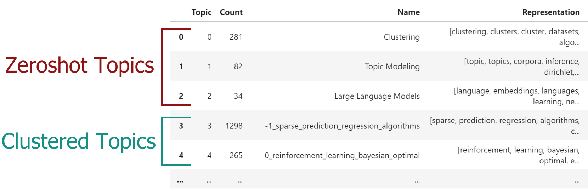

Zero-shot Topic Modeling
Zero-shot Topic Modeling is a technique that allows you to find topics in large amounts of documents that were predefined. When faced with many documents, you often have an idea of which topics will definitely be in there. Whether that is a result of simply knowing your data or if a domain expert is involved in defining those topics.
This method allows you to not only find those specific topics but also create new topics for documents that would not fit with your predefined topics. This allows for extensive flexibility as there are three scenario's to explore:
- First, both zero-shot topics and clustered topics were detected. This means that some documents would fit with the predefined topics where others would not. For the latter, new topics were found.
- Second, only zero-shot topics were detected. Here, we would not need to find additional topics since all original documents were assigned to one of the predefined topics.
- Third, no zero-shot topics were detected. This means that none of the documents would fit with the predefined topics and a regular BERTopic would be run.
This method works as follows. First, we create a number of labels for our predefined topics and embed them using any embedding model. Then, we compare the embeddings of the documents with the predefined labels using cosine similarity. If they pass a user-defined threshold, the zero-shot topic is assigned to a document. If it does not, then that document, along with others, will follow the regular BERTopic pipeline and attempt to find clusters that do not fit with the zero-shot topics.
Example¶
In order to use zero-shot BERTopic, we create a list of topics that we want to assign to our documents. However, there may be several other topics that we know should be in the documents. The dataset that we use is small subset of ArXiv papers. We know the data and believe there to be at least the following topics: clustering, topic modeling, and large language models. However, we are not sure whether other topics exist and want to explore those.
Zero-shot BERTopic needs two parameters:
* zeroshot_topic_list - The names of the topics to assign documents to. Making sure this is as descriptive as possible helps improve the assignment since they are based on cosine similarities between embeddings.
* zeroshot_min_similarity - The minimum cosine similarity needed to match a document to a document. It is a value between 0 and 1.
Using this feature is straightforward:
from datasets import load_dataset
from bertopic import BERTopic
from bertopic.representation import KeyBERTInspired
# We select a subsample of 5000 abstracts from ArXiv
dataset = load_dataset("CShorten/ML-ArXiv-Papers")["train"]
docs = dataset["abstract"][:5_000]
# We define a number of topics that we know are in the documents
zeroshot_topic_list = ["Clustering", "Topic Modeling", "Large Language Models"]
# We fit our model using the zero-shot topics
# and we define a minimum similarity. For each document,
# if the similarity does not exceed that value, it will be used
# for clustering instead.
topic_model = BERTopic(
embedding_model="thenlper/gte-small",
min_topic_size=15,
zeroshot_topic_list=zeroshot_topic_list,
zeroshot_min_similarity=.85,
representation_model=KeyBERTInspired()
)
topics, _ = topic_model.fit_transform(docs)
When we run topic_model.get_topic_info() you will see something like this:

The zeroshot_min_similarity parameter controls how many of the documents are assigned to the predefined zero-shot topics. Lower this value and you will have more documents assigned to zero-shot topics and fewer documents will be clustered. Increase this value you will have fewer documents assigned to zero-shot topics and more documents will be clustered.
Note
Setting the zeroshot_min_similarity parameter requires a bit of experimentation. Some embedding
models have different similarity distributions, so trying out the values manually and exploring the results
is highly advised.
Tip
Because zero-shot topic modeling is essentially merging two different topic models, the
probs will be empty initially. If you want to have the probabilities of topics across documents,
you can run topic_model.transform on your documents to extract the updated probs.